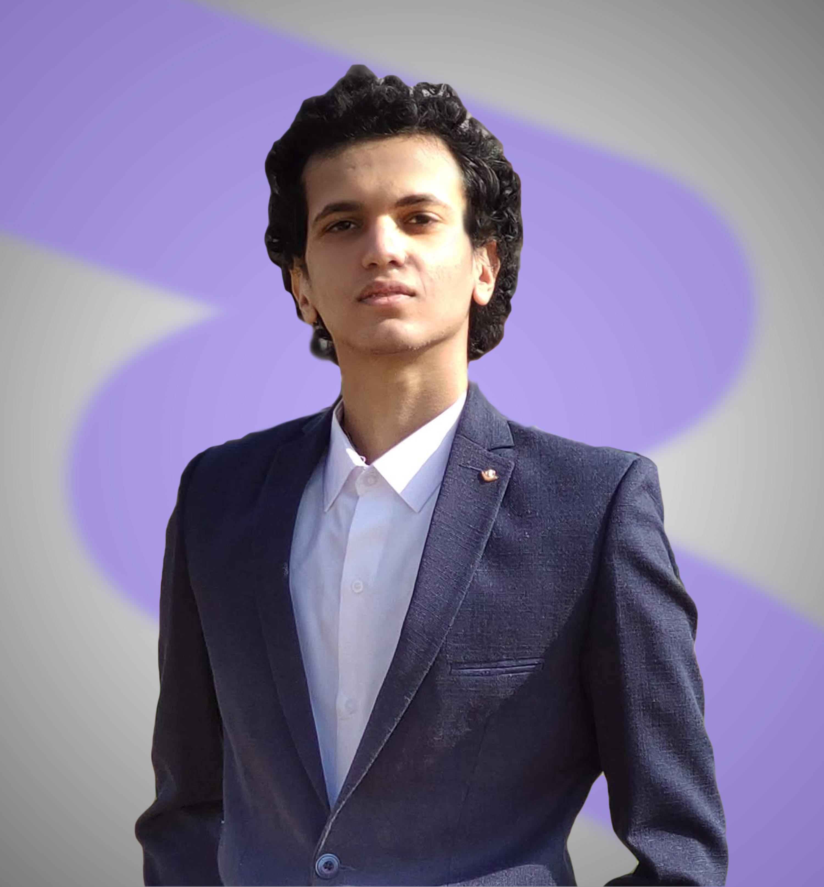

Ahmed Fikry

Summary
Creative and multi-disciplinary Graphic Designer with a commitment to driving the intersection of design and technology. Experienced in
motion graphics, video editing, UI/UX design, and art direction, having acquired expertise in these fields over the past four years. Currently a
Computer Science student at Egypt-Japan University for Science and Technology, I am constantly seeking to leverage my design skills by
incorporating technological perspectives. At the age of 20, I am eager to further expand my capabilities and engage in new challenges to
further my experience and skills.
Education
- Computer Science and Information Technology
- Egypt-Japan University for Science and Technology • Burg Al-Arab, Alexandria • 2026 • 3
Work Experience
Multimedia Designer, Art Director and UI/UX designer
Codex Solutions
- Designed the whole company's branding identity, including the logo, the colors and the art direction, also the social media posts and
Instagram's stories designs.
- Designed, developed and maintained multimedia and web content, including visuals, animations, audio, videos, and other interactive
content, that accurately depicted client objectives and adhered to brand guidelines.
- Created interactive, user-friendly UI/UX designs for three websites, achieving 32% increase in user engagement time and a 25%
improvement in user satisfaction ratings.
- Created more than four motion graphics and animation projects, increasing the posts reach by 122% through out the two next weeks.
Graphic Designer-Freelancing
Your Egypt Tour Guide
- Designed the company's branding identity including the logo, the colors and the art direction, increasing their website traffic by 33%.
- Created a brand guidelines for the company's art direction.
- Designed the business cards, the letterhead, the bags and t-shirt designs and the notebooks.
Freelance graphic designer
Freelancer.com
- Designed various marketing materials for clients, including logos, brochures, banners and print materials, with quality and project client
objectives in mind.
- Supported client demand by delivering creative projects on time and on budget, with 95% satisfaction rate among clients.
Skills
- Graphic Design: ⭐️⭐️⭐️⭐️⭐️
- Motion Graphics: ⭐️⭐️⭐️⭐️
- Video Editing: ⭐️⭐️⭐️⭐️
- UI/UX Design: ⭐️⭐️⭐️⭐️
- Filmmaking: ⭐️⭐️⭐️
- Presentation skills: ⭐️⭐️⭐️⭐️
- Leadership skills: ⭐️⭐️⭐️⭐️
- Communication Skills: ⭐️⭐️⭐️
Awards and Certifications
Other